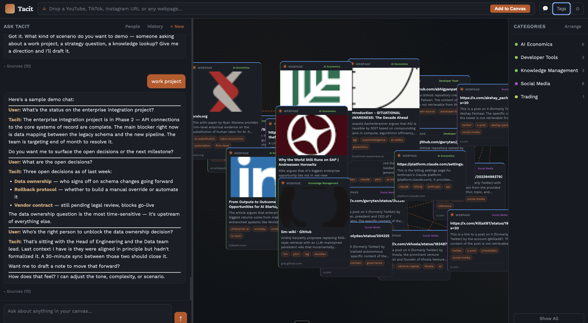

Drop any URL. Ask anything. Tacit captures what you read, remembers who you know, and searches the web — all in one canvas.

Capture, connect, and converse with your knowledge — without leaving the canvas.
YouTube (with transcripts), TikTok, Instagram, articles, and any webpage. Drop a link and Tacit extracts, summarises, and tags it automatically.
Pan, zoom, and drag nodes. Semantic connections are drawn automatically between related content — so you see how ideas link.
Ask anything in natural language. Tacit searches your knowledge base with vector embeddings and synthesises an answer using Claude Sonnet.
When your canvas doesn't have the answer, Tacit searches the web via Claude Haiku — no extra API keys or setup required.
Mention someone in chat and Tacit remembers their role, organisation, action items, and notes — surfaced automatically in future conversations.
One docker compose up command. Your data lives on your machine. No accounts, no cloud sync, no vendor lock-in.
Three steps from URL to insight.
Paste any link — YouTube video, article, tweet, or webpage. Tacit fetches the content (using Playwright for JS-heavy pages), transcribes audio, summarises with Claude, and places it on your canvas.
Semantic embeddings via ChromaDB connect related nodes automatically. Categories are inferred, duplicates are detected, and the canvas grows with your knowledge.
Chat with your entire canvas. Tacit retrieves relevant nodes, injects them as context, and generates a grounded answer. If the answer isn't on canvas, it searches the web.
No surprise dependencies. Everything runs locally.
You only need Docker Desktop and an Anthropic API key.
# Clone the repo git clone https://github.com/nik-sobolev/tacit cd tacit # Configure your key cp .env.example .env # Edit .env — set ANTHROPIC_API_KEY, USER_NAME, USER_ROLE # Start docker compose up
Then open http://localhost:8000. Data persists in ./data/ across restarts.
Free, open source, and runs entirely on your machine.